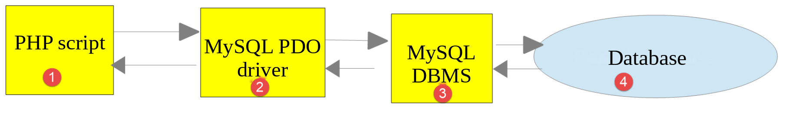
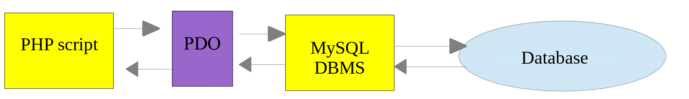

12. Usando o SGBD MySQL
Vamos agora escrever scripts PHP que usam um banco de dados MySQL:

Na arquitetura acima, o script PHP [1] não se comunica diretamente com o SGBD (Sistema de Gerenciamento de Banco de Dados) [3]. Ele se comunica com um intermediário conhecido como driver do SGBD [2]. O PHP fornece uma interface padrão para esses drivers, a interface [PDO] (PHP Data Objects). Essa interface é implementada por diferentes drivers adaptados a cada SGBD: um driver para o SGBD MySQL, outro para o SGBD PostgreSQL… Para mudar de SGBD, troca-se o driver:

O driver PDO isola o script PHP [1] do SGBD [3, 6]. Como esses drivers implementam uma interface padrão, esperamos que o script PHP [1] permaneça inalterado ao passar do SGBD MySQL [3] para o SGBD PostgreSQL [6]. Na realidade, esse ideal não existe. De fato, para se comunicar com o SGBD, o script PHP envia comandos SQL (Structured Query Language). Essa linguagem é implementada por todos os SGBDs, mas é incompleta. Consequentemente, os SGBDs acrescentaram a ela comandos proprietários. Essa é uma das principais causas de incompatibilidade entre SGBDs. Além disso, os tipos de dados que podem ser usados nos bancos de dados podem variar de um SGBD para outro. Por exemplo, o PostgreSQL suporta uma gama de tipos de dados muito mais ampla que o MySQL. Essa é uma segunda causa de incompatibilidade. Outra causa é o tratamento das chaves primárias automáticas (geradas pelo SGBD): praticamente todo SGBD tem sua própria política. Etc… Há inúmeras causas de incompatibilidade.
Se quisermos evitar reescrever o script PHP [1] ao passar do MySQL [3] para o PostgreSQL [6], geralmente precisamos inserir uma nova camada entre o script PHP [1] e os drivers PDO [2, 5], uma camada cujo objetivo é resolver as incompatibilidades entre os dois SGBDs. No entanto, nos casos simples que encontraremos, essa camada adicional não será necessária.
Vamos agora usar o SGBD MySQL. Sua versão 8.4 está incluída no pacote [Laragon] que instalamos no início deste curso.
Se o leitor não estiver familiarizado com os conceitos de bancos de dados e com a linguagem SQL, pode consultar o documento [http://sergetahe.com/cours-tutoriels-de-programmation/cours-tutoriel-sql-avec-le-sgbd-firebird/]. Esse documento usa o SGBD Firebird em vez do MySQL, mas aborda os fundamentos de bancos de dados e da linguagem SQL. A documentação do MySQL 8.4 também está disponível em [https://dev.mysql.com/doc/refman/8.4/en/].
Os scripts deste capítulo estão na pasta [scripts-console/mysql]:
12.1. Criando um banco de dados
Vamos agora mostrar como criar um banco de dados e um usuário MySQL usando a ferramenta [Laragon].
Depois de iniciado, o [Laragon] é gerenciado a partir de sua janela principal e de seu menu (clique com o botão direito na janela ou em seu ícone na barra de tarefas):
- O botão [Start All] inicia o servidor web Apache e o SGBD MySQL. A janela do [Laragon] indica então que cada um está ativo, junto com sua porta de escuta: 80 para o Apache, 3306 para o MySQL;
- o botão [Database] inicia a ferramenta [HeidiSQL], incluída no [Laragon], que permite gerenciar bancos de dados MySQL de forma gráfica. Você também pode instalar a ferramenta web [phpMyAdmin] (menu Tools / Quick Add), que fica então acessível pela URL [http://localhost/phpmyadmin];
- o botão [Terminal] abre uma janela de comandos na qual as ferramentas do [Laragon] (PHP, Composer, MySQL etc.) podem ser usadas diretamente.
O curso de PHP 7 criava o banco de dados e seu usuário com o mouse, usando o [phpMyAdmin]. Aqui, preferimos escrever os comandos SQL correspondentes em um arquivo de texto, chamado de script SQL. Esse script pode ser revisado, corrigido, armazenado junto com o código da aplicação e reexecutado à vontade para recriar o banco de dados exatamente como estava. O script [dbpersons.sql] é o seguinte:
Comentários
- linha 1: em SQL, uma linha que começa com dois hifens é um comentário;
- Linha 6: cria o banco de dados [dbpersons] se ele ainda não existir. Criaremos nele uma tabela de pessoas. O conjunto de caracteres [utf8mb4] permite armazenar todos os caracteres Unicode (letras acentuadas, bem como caracteres asiáticos, emojis etc.). Esse é o conjunto de caracteres padrão do MySQL 8. O nome [utf8], usado no curso de PHP 7, refere-se a um conjunto de caracteres mais antigo e incompleto (no máximo três bytes por caractere) do MySQL, hoje obsoleto;
- Linha 9: criação do usuário [admpersons] com a senha [nobody]. Um usuário do MySQL é identificado pelo seu nome e pela máquina a partir da qual ele se conecta — neste caso, [localhost], a máquina local. A senha [nobody] é muito fraca (fácil de adivinhar). Em um ambiente de produção, você deve escolher uma senha forte;
- Linha 12: o usuário [admpersons] recebe todos os privilégios sobre todas as tabelas ([dbpersons.*]) do banco de dados [dbpersons], e nenhum privilégio sobre os demais bancos de dados.
Este script deve ser executado pelo administrador do SGBD. Na instalação do [Laragon], trata-se do usuário [root], que não tem senha. Abra o terminal do [Laragon] na pasta [scripts-console/mysql] e execute o script usando o cliente de linha de comando [mysql]:
- A opção [-u root] especifica o nome do usuário usado para se conectar ao SGBD. Como [root] não tem senha, não é necessário informá-la (opção [-p]);
- o símbolo [<] redireciona o conteúdo do arquivo [dbpersons.sql] para a entrada do cliente [mysql], que executa os comandos SQL um após o outro. Quando tudo corre bem, nada é exibido.
Poderíamos ter aberto o arquivo [dbpersons.sql] no [HeidiSQL] (menu File / Load a SQL file) ou na aba [SQL] do [phpMyAdmin] e executá-lo a partir de lá. Verifique as permissões do usuário [admpersons] conectando-se como esse usuário. A opção [-e] permite passar um comando SQL diretamente ao cliente [mysql]; o comando [show grants] exibe as permissões do usuário conectado:
- Linha 2: o cliente [mysql] avisa que uma senha digitada na linha de comando ([-pnobody], sem espaço após [-p]) pode ser vista por outros usuários da máquina. Com a opção [-p] sozinha, a senha é digitada pelo teclado sem ser exibida;
- Linha 7: o usuário [admpersons] tem todos os privilégios sobre o banco de dados [dbpersons].
Agora temos:
- um banco de dados MySQL [dbpersons];
- um usuário chamado [admpersons/nobody] que tem acesso total a esse banco de dados.
Escreveremos scripts PHP para trabalhar com o banco de dados. O PHP oferece várias bibliotecas para gerenciar bancos de dados. Usaremos a biblioteca [PDO] (PHP Data Objects), que se insere entre o código PHP e o SGBD:

A biblioteca [PDO] permite que o script PHP seja independente da natureza exata do SGBD utilizado. Assim, como mostrado acima, o SGBD MySQL pode ser substituído pelo SGBD PostgreSQL com impacto mínimo no código do script PHP. Cada driver PDO é uma extensão do PHP que precisa estar ativada. O script [pdo-drivers.php] a seguir exibe os drivers disponíveis:
- linha 7: o método estático [getAvailableDrivers] da classe [PDO] retorna a lista de drivers PDO disponíveis;
- Linha 10: a função [extension_loaded] indica se uma extensão do PHP está carregada. Os drivers PDO para MySQL, PostgreSQL e SQLite são as extensões [pdo_mysql], [pdo_pgsql], e [pdo_sqlite].
Resultados:
Nesta instalação, os três drivers estão ativos. Apenas o driver [mysql] é necessário para este capítulo. Se algum driver estiver ausente, ative-o no menu do [Laragon]: PHP / Extensions, e clique na extensão desejada, por exemplo, [pdo_mysql]. Outra forma de ativar uma extensão é editar diretamente o arquivo [php.ini] que configura o PHP (menu PHP / php.ini do [Laragon]). Uma extensão é ativada ali por uma linha no seguinte formato:
Ela é desativada quando a linha é comentada com um ponto e vírgula ([;extension=pdo_pgsql]). Após modificar o arquivo [php.ini], é preciso reiniciar os serviços do [Laragon] (botão [Reload]) para que o Apache aplique as alterações. Os scripts de console, por outro lado, releem o arquivo [php.ini] a cada execução.
12.2. Conectando-se a um banco de dados MySQL
Para se conectar a um SGBD, é preciso criar um objeto [PDO]. Você pode usar o construtor da classe [PDO] ou, a partir do PHP 8.4, seu método estático [connect]. Ambos aceitam os mesmos parâmetros:
Os parâmetros têm os seguintes significados:
Parâmetro | Significado |
[$dsn] | (Data Source Name) uma string que especifica a natureza do SGBD e sua localização na rede. A string ["mysql:host=localhost"] indica que se trata de um SGBD MySQL em execução na máquina local. Essa string pode incluir outros parâmetros, separados por ponto e vírgula, como a porta de escuta do SGBD, o nome do banco de dados ao qual se deseja conectar e o conjunto de caracteres usado na comunicação: ["mysql:host=localhost;port=3306;dbname=dbpersons;charset=utf8mb4"] |
[$username] | o nome do usuário que se conecta |
[$password] | sua senha |
[$options] | um array de opções para o driver do SGBD |
Apenas o primeiro parâmetro é obrigatório. O objeto criado dessa forma servirá então de base para todas as operações realizadas no banco de dados ao qual você se conectou. Se o objeto não puder ser criado, uma exceção [PDOException] é lançada.
Veja um exemplo de conexão [mysql-01.php]:
Comentários
- linhas 8–10: os parâmetros de conexão;
- linha 14: a conexão com o SGBD. O método [connect] é usado aqui com os seguintes parâmetros:
- uma string que especifica o tipo de SGBD e sua localização. A string ["mysql:host=localhost"] indica que se trata de um SGBD MySQL em execução na máquina local. A porta não foi especificada; a porta 3306 é, portanto, usada por padrão. O nome do banco de dados também não foi especificado. Será então estabelecida uma conexão com o SGBD MySQL, e um banco de dados específico poderá ser selecionado depois;
- um identificador de usuário;
- sua senha;
- Linha 17: [$connection::class] é o nome da classe do objeto [$connection]. A partir do PHP 8.4, cada driver PDO tem sua própria classe, derivada da classe [PDO]: [Pdo\Mysql] para MySQL, [Pdo\Pgsql] para PostgreSQL, [Pdo\Sqlite] para SQLite. O método [PDO::connect] cria um objeto da classe correspondente ao DSN. Com [new PDO(...)], obteríamos um objeto da própria classe [PDO], que funciona da mesma forma, mas não dá acesso aos métodos específicos do driver. Como usaremos apenas os métodos comuns a todos os drivers, ambas as notações são aceitáveis;
- linha 19: a conexão é fechada ao remover a última referência ao objeto PDO criado inicialmente. Isso acontece automaticamente no fim do script;
- linha 20: a conexão com um SGBD pode falhar. Nesse caso, uma exceção [PDOException] é lançada. Essa exceção deriva da exceção do PHP [RuntimeException];
- Linha 21: a mensagem de erro da exceção é exibida;
- linha 22: o script é encerrado com um código de saída diferente de zero, o que sinaliza a falha a qualquer programa chamador.
Resultados:
Vamos executar o script novamente definindo a constante [PWD] com uma senha incorreta. O resultado é o seguinte:
A mensagem contém três informações: o código SQLSTATE [HY000], um código de erro padronizado comum a todos os SGBDs (HY000 = erro geral), o código de erro específico do MySQL [1045] e a mensagem do MySQL.
12.3. Criando uma tabela
O script [mysql-02.php] demonstra como criar uma tabela em um banco de dados:
Comentários
- Linha 7: desta vez, o DSN se refere ao banco de dados [dbpersons] ([dbname=dbpersons]). O parâmetro [charset=utf8mb4] informa ao SGBD que as strings trocadas com ele são codificadas em UTF-8, a codificação usada em nossos scripts (PHP). Isso garante que os caracteres acentuados sejam armazenados corretamente no banco de dados e recuperados corretamente;
- linha 14: conexão com o banco de dados. Este é sempre o primeiro passo. O resultado da conexão é um objeto [PDO] por meio do qual as operações no banco de dados serão realizadas;
- Linha 16: o comando SQL [drop table] exclui a tabela [persons] do banco de dados [dbpersons]. A cláusula [if exists] evita um erro caso a tabela [persons] não exista;
- Linha 17: execução do comando SQL anterior no banco de dados [dbpersons] usando o método [PDO::exec]. Essa execução pode disparar uma [PDOException], que será interceptada pela cláusula [catch];
- Linhas 19–20: este comando SQL cria uma tabela chamada [persons]. Uma tabela contém linhas e colunas. As colunas formam o que se chama de estrutura da tabela. As linhas formam o conteúdo da tabela. Um banco de dados pode conter uma ou mais tabelas. A tabela [persons] terá aqui três colunas:
- first_name: o primeiro nome de uma pessoa, como uma string de até 30 caracteres;
- last_name: o sobrenome da mesma pessoa, como uma string de até 30 caracteres;
- age: a idade da pessoa, como um inteiro;
- O atributo [not null] em uma coluna exige que a coluna tenha um valor. Deixar de fornecê-lo resulta em um erro [PDOException];
- [primary key(last_name, first_name)] define uma chave primária para a tabela [persons]. Uma chave primária tem um valor único para cada linha da tabela. Aqui, a chave primária é obtida pela concatenação das colunas [last_name] e [first_name] da linha. Essa restrição garante que a tabela não possa conter duas pessoas com o mesmo nome e sobrenome — ou seja, duas pessoas com o mesmo nome completo. Criar uma pessoa com o mesmo nome de outra já existente na tabela dispara uma [PDOException];
- linhas 23–25: se ocorrer um erro [PDOException] , a mensagem de erro associada é exibida;
- linhas 26–28: a cláusula [finally] é executada em todos os casos, ocorra ou não uma exceção, para fechar a conexão com o banco de dados.
Em caso de erro, uma operação SQL realizada com um objeto [PDO] pode retornar um valor específico (frequentemente o booleano [false]) sem informar nada, ou lançar uma exceção. Esse comportamento é controlado pelo atributo [PDO::ATTR_ERRMODE] da conexão. No PHP 7, o modo padrão era o primeiro: os erros eram silenciosos, e o procedimento do PHP 7 solicitava o segundo modo por meio da seguinte instrução:
A partir do PHP 8.0, o modo de exceção é o padrão: qualquer erro do SGBD dispara uma [PDOException]. Essa instrução, portanto, não é mais necessária, e não a incluiremos mais. É também por isso que escrevemos [drop table if exists]: no PHP 7, o comando [drop table persons] em uma tabela inexistente falhava silenciosamente; no PHP 8, ele lançaria uma exceção.
Resultados:
Se o script for executado sem erros, você pode verificar a existência da tabela e sua estrutura usando o [HeidiSQL], o [phpMyAdmin] ou, de forma mais simples, o cliente [mysql]. O comando SQL [describe] exibe a estrutura de uma tabela:
- Linhas 6–8: as três colunas da tabela, junto com seus tipos (coluna Type);
- Coluna Null: nenhuma das três colunas pode ficar vazia;
- Coluna Key: as colunas [first_name] e [last_name] fazem parte da chave primária (PRI).
A consulta SQL [show index] exibe os índices da tabela. Um índice permite encontrar linhas da tabela com um valor de índice específico mais rapidamente do que percorrendo sequencialmente as linhas da tabela. A chave primária sempre faz parte dos índices, mas um índice pode não ser uma chave primária:
- O índice aqui é a chave primária (coluna Key_name = PRIMARY);
- ele é composto pelas colunas [last_name, first_name] de cada linha, nessa ordem (colunas Seq_in_index e Column_name).
Vejamos agora o que acontece se introduzirmos erros no nome do banco de dados, no nome do usuário e na senha, respectivamente.
Se informarmos um nome de banco de dados inexistente ([dbname=dbpersons2]):
Se informarmos um nome de usuário inexistente:
Se você informar uma senha incorreta:
Observe que o MySQL não indica se o nome de usuário ou a senha estão incorretos: trata-se de uma medida de segurança destinada a não dar pistas a quem tenta adivinhar as credenciais. Da mesma forma, o usuário [admpersons] não fica sabendo se o banco de dados [dbpersons2] existe ou não: ele apenas sabe que não consegue acessá-lo.
12.4. Preenchendo uma tabela
Vamos escrever um script PHP que executa os comandos SQL encontrados no seguinte arquivo de texto, [creation.txt]:
Comentários
- O SQL (Structured Query Language) não diferencia maiúsculas de minúsculas nos comandos SQL;
- Linha 1: exclui a tabela [persons] se ela existir;
- Linha 2: cria a tabela [persons] com três colunas (first_name, last_name, age) e a chave primária (last_name, first_name);
- Linhas 3–9: insere 7 linhas na tabela [persons];
- linha 5: este comando insert deve falhar, pois tenta a mesma inserção da linha anterior. A restrição de chave primária deve impedir essa inserção: não pode haver duas pessoas com o mesmo nome e sobrenome;
- linha 9: este comando insert também deve falhar pelo mesmo motivo;
- linha 7: o primeiro nome [Géraldine] contém um caractere acentuado. O arquivo [creation.txt], como todos os arquivos do curso, é codificado em UTF-8: essa é a codificação padrão do [VS Code], como exibido em sua barra de status. O curso de PHP 7 adicionava ao arquivo o comando específico do MySQL para informar ao SGBD a codificação dos caracteres recebidos. Isso não é mais necessário: a codificação é definida de uma vez por todas pelo parâmetro [charset=utf8mb4] do DSN.
O script PHP responsável por executar os comandos SQL desse arquivo de texto é o seguinte: [mysql-03.php]:
Comentários
- A função [executeCommands] (linhas 35–80) é responsável por executar os comandos SQL encontrados no arquivo de texto [$sqlFileName] (parâmetro 2). Para executá-los, ela usa a conexão aberta [$connection] (parâmetro 1) com o servidor MySQL. O terceiro parâmetro, [$tracking], é um booleano que controla a saída na tela: quando definido como [true], o comando SQL executado é exibido na tela, junto com a indicação de sucesso ou falha; caso contrário, a execução do comando SQL é silenciosa. O quarto parâmetro, [$stop], controla o que fazer quando um comando SQL falha: se [true], especifica que a execução dos comandos SQL deve parar; caso contrário, a execução continua. A função [executeCommands] retorna um array de mensagens de erro; esse array fica vazio se nenhum erro ocorreu.;
- linha 12: o caminho do arquivo [creation.txt] é construído a partir da constante [__DIR__], que é o diretório do script. Isso garante que o script encontre seu arquivo independentemente do diretório a partir do qual é executado;
- linhas 15–20: é aberta uma conexão com o banco de dados MySQL [dbpersons]. Se a conexão falhar, uma mensagem de erro é exibida e o script termina;
- linha 23: a função [executeCommands] é chamada para executar o arquivo de comandos SQL. A conexão aberta é passada a ela. Os dois últimos argumentos são passados por nome ([tracking: true, stop: false]): são argumentos nomeados (PHP 8.0). A chamada [executeCommands($connection, SQL_COMMANDS_FILENAME, true, false)] seria equivalente, porém menos legível: sem olhar a assinatura da função, não fica claro o que [true] e [false] significam;
- linha 25: a conexão é fechada;
- linhas 27–30: os erros retornados pela função [executeCommands] são exibidos;
- Linhas 45–47: os comandos SQL são colocados no array [$queries] usando a função [file]. A opção [FILE_IGNORE_NEW_LINES] remove o caractere de fim de linha de cada linha lida, enquanto a opção [FILE_SKIP_EMPTY_LINES] ignora as linhas vazias. As duas opções são combinadas pelo operador [|] (OR binário). Se o arquivo não puder ser lido, [file] não é chamada — o que emitiria um aviso — e [$queries] equivale a [false];
- linhas 49–51: se o arquivo de comandos SQL não pôde ser lido, é retornado um array de erros contendo uma única mensagem;
- linha 53: os erros são acumulados no array [$errors];
- linha 54: percorremos todas as consultas;
- linha 56: a função [trim] remove os espaços que antecedem e seguem o texto do comando SQL. Por “espaços” entendemos o caractere de espaço, o caractere de tabulação \t, o retorno de carro \r, a quebra de linha \n etc. Uma linha contendo apenas espaços torna-se, assim, vazia: ela é ignorada (linha 60);
- linha 64: o comando SQL é enviado ao servidor MySQL. O método [PDO::exec] lança uma exceção se a execução falhar. Se a execução for bem-sucedida, o comando SQL é exibido na tela caso o parâmetro [$tracking] esteja definido como [true];
- linha 71: se ocorrer um erro, a mensagem de erro é adicionada ao array de erros;
- linhas 73–75: se o parâmetro [$stop] estiver definido como [true], o laço é encerrado com a instrução [break];
- linha 79: depois que todos os comandos SQL foram executados, o array de erros [$errors] é retornado.
A função [addError] (linhas 82–91) adiciona um erro ao array de erros [$errors]. Ela recebe 4 parâmetros:
- o parâmetro [$errors] é passado por referência ([&$errors]). Isso porque queremos modificar o array passado como parâmetro, e não uma cópia dele;
- o parâmetro [$query] é o texto SQL do comando que falhou;
- o parâmetro [$msg] é a mensagem de erro associada ao comando que falhou;
- o booleano [$tracking] indica se a mensagem de erro deve ser exibida ([true]) ou não ([false]) no console.
Observe que as funções [executeCommands] e [addError] são definidas depois do código que as utiliza. Isso é possível porque o PHP identifica todas as funções definidas no nível superior de um script antes de começar a executá-lo.
Saída na tela:
- Linhas 6 e 10: as duas inserções de homônimos falharam: a chave primária 'Lefur-Sylvie' (e 'Girond-Paulette', respectivamente) já existe (Duplicate entry). O código SQLSTATE [23000] indica uma violação de restrição de integridade; o código [1062] é o código de erro do MySQL;
- Linhas 12–16: o resumo dos erros.
As inserções realizadas podem ser vistas usando o cliente [mysql]:
Observe que as linhas são retornadas na ordem da chave primária (sobrenome, nome), que não é a ordem das inserções. Em SQL, a ordem das linhas retornadas por um [select] só é garantida se for especificada por meio de uma cláusula [order by].
12.5. Executando comandos SQL quaisquer
O script a seguir demonstra a execução de comandos SQL a partir do seguinte arquivo de texto, [sql.txt]:
Entre esses comandos SQL, há o comando [select], que retorna resultados do banco de dados; os comandos [insert], [update], [delete], que modificam o banco de dados sem retornar nenhum resultado e, por fim, comandos errôneos como o último ([xselect]). O script [mysql-04.php] é baseado no script [mysql-03.php], com o nome do arquivo de comandos SQL ([__DIR__ . "/sql.txt"]) alterado. Apenas a função [executeCommands] é modificada, e é adicionada uma função [displayInfo] :
Comentários
- Linhas 35–87: a função [executeCommands] foi ligeiramente modificada: o comando [select] não é executado da mesma forma que os demais comandos SQL. Esse comando é o único que retorna uma tabela como resultado — ou seja, um conjunto de linhas e colunas do banco de dados;
- Linha 63: isolamos a primeira palavra do comando SQL. A função [explode] divide a consulta nos espaços em no máximo 2 partes (3º parâmetro); o primeiro segmento ([[0]]) é o nome do comando, convertido em minúsculas pela função [strtolower]. O curso de PHP 7 usava uma expressão regular;
- linhas 67–69: se o comando SQL for [select], o método [PDO::query] é usado; caso contrário, o método [PDO::exec] é usado para executar o comando SQL. Em ambos os casos, se a execução falhar, uma exceção é lançada e capturada pela cláusula [catch]. Se a execução for bem-sucedida, seu resultado é exibido pela função [displayInfo] (linha 75):
- O método [query] retorna um objeto do tipo [PDOStatement], que dá acesso às linhas retornadas pelo [select]. Seu segundo parâmetro, [PDO::FETCH_NUM], especifica que cada linha deve ser retornada como um array indexado pelos números de coluna 0, 1, 2, …;
- o método [exec] retorna um inteiro: o número de linhas modificadas pelo comando SQL;
- Linhas 101–124: a função [displayInfo] exibe informações sobre o resultado da execução de um comando SQL. O parâmetro [$result] tem o tipo [PDOStatement|int]: trata-se de um tipo união (PHP 8.0), que aceita um objeto [PDOStatement] ou um inteiro;
- linha 104: o caso do [select] é tratado. O operador [instanceof] verifica o tipo do objeto [$result];
- linha 107: o método [PDOStatement::columnCount] retorna o número de colunas da tabela de resultados do [select];
- linha 108: o método [PDOStatement::getColumnMeta] retorna um array contendo informações sobre a coluna nº [$i] na tabela de resultados do [select]. Nesse array, o valor associado à chave 'name' é o nome da coluna. Os nomes das colunas são reunidos no array [$columns];
- linha 110: a função [implode] concatena os nomes das colunas, separando-os por vírgulas;
- linha 113: a função [str_repeat] é usada para construir uma linha separadora do mesmo comprimento que o título. A função [mb_strlen] conta os caracteres de uma string UTF-8; a função [strlen] conta os bytes, e um caractere acentuado ocupa dois bytes;
- Linhas 115–117: um objeto do tipo [PDOStatement] pode ser percorrido por um laço [foreach]. A cada iteração, o elemento obtido é uma linha da tabela de resultados do [select], na forma de um array contendo os valores das várias colunas da linha. Esses valores são exibidos separados por vírgulas;
- Linhas 121–123: o resultado da execução de um comando [insert], [update] ou [delete] é o número de linhas modificadas pelo comando. O curso de PHP 7 usava aqui uma instrução [switch], em que uma das cláusulas havia sido escrita por engano como [case "delete";] com ponto e vírgula em vez de dois-pontos. O PHP tolerava isso; a partir do PHP 8.5, essa sintaxe é obsoleta (deprecated).
Saída na tela:
- linhas 33–35: o último [select] não retorna nenhuma linha: a pessoa [Bruneau] foi excluída pelo comando [delete] anterior;
- Linha 36: o comando [xselect] não existe. O código SQLSTATE [42000] indica um erro de sintaxe ou uma violação de acesso; o código MySQL [1064] indica um erro de sintaxe.
12.6. Usando comandos SQL preparados
12.6.1. Exemplo 1
Vamos examinar o script a seguir: [mysql-05.php]:
Comentários
Aqui, nos interessam as linhas que inserem pessoas na tabela de pessoas do banco de dados [dbpersons].
- Linha 16: o comando SQL [delete] sem a cláusula [where] exclui todas as linhas da tabela;
- Linha 23: um comando SQL parametrizado é “preparado”. Os parâmetros são precedidos por dois-pontos: [:last_name], [:first_name], [:age]. Para “preparar” um comando SQL, use o método [PDO::prepare]. O resultado é um objeto do tipo [PDOStatement]. “Preparar” não é executar: nada é modificado no banco de dados;
- Linha 26: execução do comando preparado usando o método [PDOStatement::execute]. Para isso, é preciso atribuir valores aos parâmetros [:last_name], [:first_name] e [:age]. Há várias maneiras de fazer isso. Aqui, usamos um array associativo cujas chaves são os nomes dos parâmetros do comando preparado, que passamos ao método [PDOStatement::execute];
- linha 27: o método [PDOStatement::rowCount] retorna o número de linhas modificadas pela última execução do comando preparado. Na string delimitada por aspas, a chamada do método é colocada entre chaves [{...}] para que o PHP possa avaliá-la. O mesmo vale para o elemento de array [{$person["first_name"]}];
- linhas 30–33: outra maneira de fazer isso é atribuir um valor aos parâmetros usando o método [PDOStatement::bindValue] antes de chamar [execute] sem nenhum argumento. O terceiro parâmetro opcional de [bindValue] especifica o tipo SQL do valor ([PDO::PARAM_INT] para um inteiro, [PDO::PARAM_STR] — o padrão — para uma string). A desvantagem é que é necessária uma instrução por parâmetro. O método do array associativo costuma ser mais conveniente.
O método usado aqui para realizar as inserções:
- um comando preparado;
- n execuções do comando preparado;
é mais eficiente em termos de tempo de execução do que executar n comandos SQL diferentes. Acima de tudo, tem outra vantagem decisiva: os valores dos parâmetros são passados ao SGBD separadamente do texto do comando SQL. Portanto, eles não podem alterar o significado do comando. Se o comando SQL fosse construído por concatenação — por exemplo, ["insert into persons values ('$first_name', '$last_name', $age)"], em que um primeiro nome contendo um apóstrofo (“ Jean-Michel d'Ormesson”) causaria um erro de sintaxe, e um usuário malicioso poderia inserir comandos SQL à sua escolha: isso é conhecido como um ataque de injeção de SQL. Consultas preparadas devem, portanto, ser usadas sempre que uma consulta contiver valores provenientes de fora do script. Elas podem ser usadas para os comandos SQL [select], [update], [delete] e [insert]. No caso do comando SQL [select], depois de executado com [PDOStatement::execute], as linhas do resultado são obtidas pelos métodos [PDOStatement::fetch] ou [PDOStatement::fetchAll].
Resultados:
12.6.2. Exemplo 2
O script a seguir, [mysql-06.php], demonstra o uso de um comando preparado para a operação SQL [select], bem como várias maneiras de obter as linhas retornadas por essa operação:
Comentários
- linhas 13–23: uma classe chamada [Person] cujos atributos privados tipados têm os nomes das colunas da tabela [persons];
- Linhas 26–34: uma classe imutável [ImmutablePerson] cujo construtor tem parâmetros com os nomes das colunas da tabela [persons];
- linha 38: o quarto parâmetro de [PDO::connect] é um array de opções de conexão. A opção [PDO::ATTR_DEFAULT_FETCH_MODE] determina como as linhas lidas serão retornadas por padrão: neste caso, [PDO::FETCH_ASSOC], que usa arrays associativos indexados pelos nomes das colunas. Sem essa opção, o modo padrão é [PDO::FETCH_BOTH] (veja abaixo);
- linhas 43–45: 10 linhas são inseridas na tabela [persons] usando uma consulta preparada. O array de valores é construído diretamente na chamada a [execute];
- linhas 47–48: um comando SQL [select] é “preparado” e depois executado;
- linha 50: o método [PDOStatement::fetch] é usado para obter a próxima linha do resultado da operação SQL [select] executada — neste caso, a primeira linha. O método [fetch] pode retornar linhas de várias formas. O script demonstra algumas delas. Sem nenhum parâmetro, ele usa o modo padrão da conexão, que neste caso é um array associativo. Observe que a idade é retornada como um inteiro ([int(0)]). Esta é uma novidade do PHP 8.1: antes, o driver MySQL retornava todos os valores como strings ([string(1) "0"] no PHP 7). O resultado exibido por [var_dump] é o seguinte:
- Linha 53: o parâmetro [PDO::FETCH_BOTH] faz com que a linha retornada seja um array indexado tanto pelos nomes quanto pelos números das colunas:
- linha 56: o parâmetro [PDO::FETCH_OBJ] faz com que a linha retornada seja um objeto do tipo [stdClass], cujos atributos são os nomes das colunas da tabela:
- Linha 59: o modo de leitura do método [fetch] é definido usando o método [PDOStatement::setFetchMode]. Esse modo passa então a ser o modo padrão do comando [$statement] até ser alterado — seja por outra operação [setFetchMode], seja pela passagem de um modo como parâmetro ao método [fetch], como foi feito anteriormente. A operação [setFetchMode(PDO::FETCH_CLASS, Person::class)] especifica que a linha lida deve ser colocada em um objeto do tipo [Person]. [Person::class] é a string "Person", o nome completo da classe. O PDO cria o objeto e depois atribui os valores das colunas de mesmo nome aos seus atributos, mesmo que esses atributos sejam privados. A linha seguinte exibe o resultado:
- Linhas 63–65: mostram como processar sequencialmente as demais linhas do [select]. O método [fetch] retorna [false] quando não há mais linhas, o que encerra o laço. A exibição de [$person] usa o método [__toString] da classe [Person]:
- linhas 67–68: um [select] parametrizado: queremos apenas as pessoas com pelo menos 70 anos;
- Linha 69: o método [PDOStatement::fetchAll] retorna todas as linhas do resultado de uma só vez, neste caso como arrays associativos (o modo padrão da conexão). A função [array_map] converte cada uma delas em um objeto [ImmutablePerson]. A expressão [new ImmutablePerson(...$row)] usa o operador spread [...] em um array associativo: cada chave se torna um argumento nomeado (PHP 8.1). Assim, a linha [["last_name" => "lastName7", "first_name" => "firstName7", "age" => 70]] resulta na chamada [new ImmutablePerson(last_name: "lastName7", first_name: "firstName7", age: 70)]. Essa técnica é adequada para uma classe imutável cujos atributos são inicializados pelo construtor, ao passo que o modo [PDO::FETCH_CLASS] — que atribui valores diretamente aos atributos — falha com uma classe como [ImmutablePerson], cujo construtor exige argumentos. Ela também tem a vantagem de fazer o PHP verificar o tipo de cada valor. O resultado exibido é o seguinte:
A tabela a seguir resume os modos de leitura encontrados:
Modo | Uma linha é retornada na forma de |
[PDO::FETCH_ASSOC] | um array associativo [column => value] |
[PDO::FETCH_NUM] | um array indexado pelos números das colunas 0, 1, 2… |
[PDO::FETCH_BOTH] | um array indexado tanto pelos nomes quanto pelos números das colunas (modo padrão do PDO) |
[PDO::FETCH_OBJ] | um objeto [stdClass] cujos atributos são os nomes das colunas |
[PDO::FETCH_CLASS] | um objeto da classe especificada cujos atributos têm os nomes das colunas |
Cada driver também tem suas próprias opções, agrupadas em sua classe a partir do PHP 8.4. Por exemplo, a opção que executa um comando SQL a cada conexão com o MySQL é escrita como [Pdo\Mysql::ATTR_INIT_COMMAND]. As antigas constantes [PDO::MYSQL_ATTR_INIT_COMMAND], encontradas em muitos documentos, estão obsoletas (deprecated) desde o PHP 8.5.
12.7. Usando transações
Uma transação permite agrupar uma sequência de comandos SQL em uma única unidade de execução: ou todos os comandos têm sucesso, ou um deles falha, caso em que todos os comandos SQL anteriores são desfeitos. Em outras palavras, quando você usa uma transação para executar comandos SQL, após o término da transação o banco de dados está em um estado estável:
- ou em um novo estado, criado pela execução bem-sucedida de todos os comandos SQL da transação;
- ou no estado em que estava antes de a transação começar a ser executada.
Vamos retomar o exemplo de execução dos comandos SQL contidos em um arquivo de texto, discutido na seção “Executando comandos SQL quaisquer”. Incluiremos essa execução em uma transação. Os comandos SQL estarão contidos no seguinte arquivo [sql2.txt]:
O comando errôneo da linha 11 fará com que toda a transação falhe. O banco de dados deve, portanto, voltar ao estado anterior à transação. No exemplo acima, a linha inserida pela linha 9 não deve aparecer na tabela. O script difere muito pouco do script [mysql-04.php]. O nome do arquivo de comandos SQL passa a ser [__DIR__ . "/sql2.txt"], e a função [executeCommands] perde o quarto parâmetro:
Isso acontece porque, como os comandos SQL são executados dentro de uma transação, qualquer erro encerrará a transação. A função [executeCommands] passa a ser a seguinte:
Comentários
- Linhas 41–42: lembrete do papel de uma transação;
- linha 54: uma transação é iniciada usando o método [PDO::beginTransaction]. A partir desse ponto, qualquer comando SQL executado dentro do laço [foreach] é executado dentro dessa transação;
- linhas 82–83: no primeiro erro, o laço é encerrado: não há por que executar os comandos seguintes, já que a transação sofrerá rollback;
- linhas 87–95: o array [$errors] fica vazio se nenhum erro ocorreu. A transação é então confirmada usando o método [PDO::commit]: as alterações feitas pelos comandos SQL tornam-se permanentes. Caso contrário, é feito o rollback da transação usando o método [PDO::rollBack]: as alterações feitas pelos comandos SQL da transação são desfeitas. O erro da transação é então adicionado à lista de erros.
Antes de o script [mysql-07.php] ser executado, a tabela [persons] contém as dez linhas inseridas pelo script [mysql-06.php]:
Execute o script [mysql-07.php]. As saídas na tela são as seguintes:
- Linhas 47–52: a linha [Josette, Bruneau, 46] foi inserida com sucesso na tabela dentro da transação;
- Linha 53: ocorre um erro no comando [xselect];
- Linha 54: é feito então o rollback da transação.
Se verificarmos o estado do banco de dados, veremos que ele está no mesmo estado de antes da execução do script. Em particular, não vemos a linha [Josette, Bruneau, 46] da linha 52 dos resultados acima:
Resumo:
- uma transação começa com o método [PDO::beginTransaction];
- ela é concluída com sucesso usando o método [PDO::commit];
- ela é encerrada em caso de falha usando o método [PDO::rollBack];
- o método [PDO::inTransaction] indica se há uma transação em andamento.
Ao trabalhar com um banco de dados, é uma boa prática colocar qualquer operação SQL dentro de uma transação para isolá-la dos demais usuários do banco de dados (esta é também uma das finalidades da transação). Uma transação deve ser a mais curta possível. Portanto, certifique-se de encerrá-la com um [commit] ou um [rollBack], conforme o caso. Por fim, observe: no MySQL, os comandos que modificam a estrutura do banco de dados ([create table], [drop table] etc.) não podem sofrer rollback. Eles confirmam implicitamente a transação em andamento. É por isso que o arquivo [sql2.txt] contém apenas os comandos [select], [insert], [update] e [delete] .